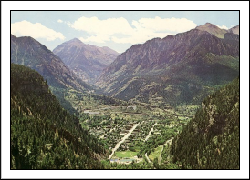

Scenery Page
I'm probably a few years away from the scenery process on my layout. I've not had a lot of experience in the area of scenery either. I have been doing some experimenting with a small 1' x 4' module. I've got a lot to learn in the area of scenery! I hope some day that my layout can come close to the beautiful scenery found in Colorado.
